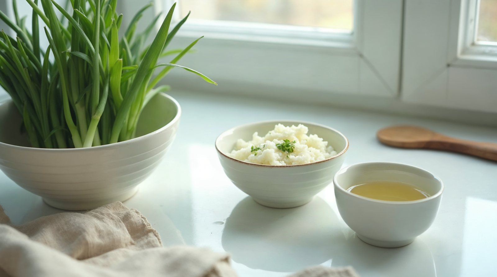
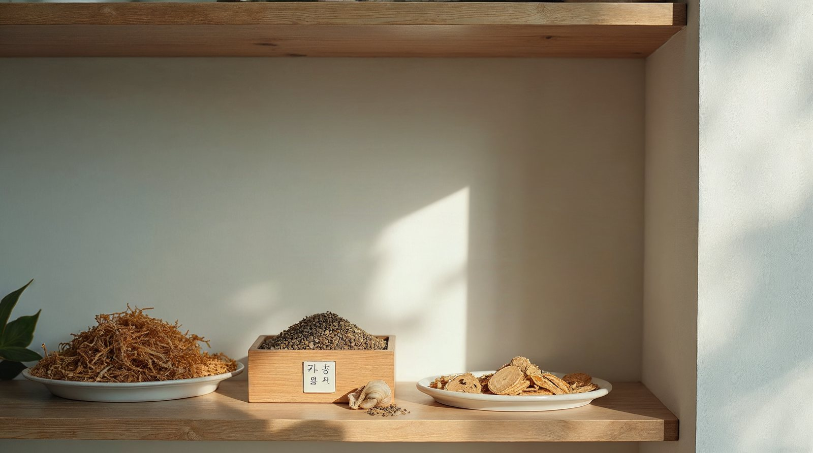

이종호 한의사 감수좋은꿈참사랑한의원 대표원장 (한의사 면허번호 19769)발행 2026-11-26 · 수정 2026-11-26
이 글의 차례
며칠 전부터 옆구리 한쪽이 콕콕 쑤십니다. 담이 들었나 싶어 파스를 붙였는데, 이틀 뒤 샤워를 하다 보니 그 자리에 붉은 점들이 줄지어 올라와 있습니다. 옷이 스치기만 해도 따갑고, 밤에는 화끈거려 잠을 뒤척이게 됩니다.
대상포진은 어릴 때 앓은 수두 바이러스가 몸속 신경에 숨어 있다가, 면역이 떨어진 틈에 다시 깨어나 생기는 병으로 알려져 있습니다. 그래서 신경이 지나가는 길을 따라 몸 한쪽에 띠 모양으로 통증과 물집이 나타납니다. 가슴과 옆구리, 등이 흔하고 얼굴이나 목, 팔다리에도 생깁니다.
처음 며칠은 물집 없이 통증만 있어 근육통이나 담으로 여기기 쉽습니다. 대상포진은 항바이러스제를 일찍 시작할수록 도움이 된다고 알려져 있어, 의심되면 피부과나 내과 진료를 먼저 받으시길 권합니다. 한의원은 그 치료와 함께 몸의 회복을 곁에서 살피는 자리입니다.
진료실에서 이런 말씀을 자주 듣습니다. "아픈 데가 피부가 아니라 속에서 쑤시는 것 같아요." "그렇게 바쁘게 지낼 때는 몰랐는데, 한숨 돌리자마자 이렇게 됐어요." 대상포진은 몸이 오래 버티다 '이제는 좀 쉬어 달라'고 보내는 신호처럼 찾아오는 경우가 많습니다.
그 통증이 얼마나 성가시고 지치는지 잘 압니다. 옷깃만 스쳐도 움찔하게 되고, 밤에 돌아눕다 깨는 날이 이어지면 마음까지 예민해집니다. 그동안 얼마나 무리하셨을까 싶은 마음으로 이야기를 듣습니다.
왜 대상포진이 생길까요
어릴 때 수두를 앓으면 열이 내리고 물집이 아물어도 바이러스가 완전히 사라지지 않고 신경절이라는 곳에 조용히 숨어 지낸다고 알려져 있습니다. 평소에는 면역이 이 바이러스를 단단히 붙잡고 있습니다.
그런데 나이가 들거나, 큰 병을 앓거나, 잠이 모자라고 피로가 오래 쌓이거나, 면역을 낮추는 약을 쓰는 동안에는 그 붙잡는 힘이 약해질 수 있습니다. 그 틈에 바이러스가 다시 깨어나 신경을 따라 피부로 내려오는 것이 대상포진입니다.
신경을 따라 내려오기 때문에 몸의 한쪽, 한 줄기에만 생기는 것이 특징입니다. 등 가운데를 넘어 반대편까지 번지는 경우는 드물다고 알려져 있습니다. 물집보다 통증이 먼저 오는 것도 신경이 먼저 염증을 겪기 때문입니다.
한의학에서는 허리와 옆구리를 따라 붉은 물집이 띠처럼 두르는 모습을 사전창(蛇纏瘡), 뱀이 몸을 감은 것 같다고 부르며 살펴 왔습니다. 그리고 그 바탕에 지친 몸과 쌓인 열이 있다고 보았지요. 저도 피부에 올라온 것만큼 그 피부를 품고 있던 몸이 얼마나 지쳐 있었는지를 함께 봅니다.
젊은 분도 예외는 아닙니다. 시험이나 마감, 이사, 간병처럼 몸과 마음을 한꺼번에 쓰는 시기를 지난 뒤 생겼다는 이야기를 자주 듣습니다. 나이보다 그 시기의 몸 사정을 함께 보는 이유입니다.
대상포진은 이런 순서로 지나갑니다
대상포진은 대개 몇 단계를 거치며 지나갑니다. 사람마다 길이와 세기는 다르지만, 흐름을 알고 있으면 지금 어디쯤인지 가늠하는 데 도움이 됩니다.
물집이 생기기 전
몸 한쪽이 쑤시거나, 화끈거리거나, 찌릿하거나, 피부가 예민해지는 느낌이 며칠 먼저 옵니다. 가벼운 열이나 몸살 기운, 피로감이 함께 있기도 합니다. 이때는 근육통, 담, 디스크, 심지어 속병으로 오해하기 쉽습니다.
물집이 올라오는 시기
통증이 있던 자리에 붉은 반점이 생기고, 그 위로 작은 물집이 무리 지어 올라옵니다. 띠 모양으로 줄지어 퍼지는 경우가 많습니다. 물집은 며칠 동안 새로 생기다가 점점 고름처럼 탁해지고 딱지가 앉습니다.
딱지가 앉고 아무는 시기
대개 2~4주 사이에 딱지가 떨어지며 피부가 아뭅니다. 자리에 따라 색이 조금 남기도 합니다. 이 시기에는 물집이 터진 자리를 깨끗하게 두고 긁지 않는 것이 중요합니다.
통증이 남는 경우
피부가 다 아문 뒤에도 그 자리에 통증이 몇 달씩 남는 경우가 있습니다. 이를 대상포진 후 신경통이라고 부르며, 나이가 많을수록, 처음 통증이 심했을수록 더 생기기 쉽다고 알려져 있습니다. 옷이 스치기만 해도 아프거나, 찌르는 듯한 통증이 불쑥 찾아오기도 합니다.
비슷해 보이는 다른 통증과 물집
근육통과 담
대상포진 초기 통증은 근육통과 비슷해 보입니다. 다만 근육통은 움직이거나 누를 때 더 아프고, 대상포진 통증은 가만히 있어도 화끈거리거나 피부를 살짝 스치기만 해도 따가운 경우가 많습니다. 통증이 몸 한쪽에 띠처럼 있다면 며칠 동안 피부를 잘 살펴보세요.
단순포진
입술 주위나 코 옆에 작은 물집이 몇 개 모여 생겼다가 일주일 남짓 지나 아무는 것은 단순포진인 경우가 많습니다. 같은 자리에 반복해서 생기는 것이 특징입니다. 대상포진은 더 넓게, 신경을 따라 띠 모양으로 생긴다는 점이 다릅니다.
접촉 피부염
새 옷이나 파스, 화장품이 닿은 자리에 붉게 가렵고 물집이 생기는 접촉 피부염도 있습니다. 이때는 닿은 모양을 따라 생기고, 통증보다 가려움이 큰 경우가 많습니다. 파스를 붙였던 자리라면 둘이 겹쳐 헷갈릴 수 있어 진료 때 꼭 말씀해 주세요.
예를 들면 이런 경우입니다
실제 어느 분의 사연이 아니라, 진료실에서 자주 보는 모습을 바탕으로 그려 본 장면입니다.
예를 들어 몇 주 동안 집안의 큰일을 치르느라 잠을 줄이고 끼니를 거르던 분이 일이 끝나자마자 옆구리에 물집이 올라왔다면, 피부과 치료는 이어 가시도록 하고 그동안 무너진 잠과 식사부터 함께 정리합니다. 쉬는 것도 치료의 일부라고 말씀드립니다.
딱지는 다 떨어졌는데 옷이 닿으면 여전히 따갑다는 분이라면, 통증이 언제, 어떤 자극에 심해지는지 적어 보시도록 합니다. 처방받은 진통제가 있다면 그 약은 그대로 드시며, 통증 클리닉 상담이 필요한지도 함께 이야기합니다.
대상포진 뒤로 기운이 빠지고 입맛이 없어 한동안 몸이 축난 느낌이라는 분이라면, 식사를 어떻게 다시 챙길지, 잠을 어떻게 되돌릴지부터 하나씩 정합니다. 회복에는 시간이 걸린다는 것을 함께 인정하는 데서 시작합니다.
먼저 이렇게 여쭙니다
대상포진으로 오시면 대략 이런 순서로 여쭙니다.
- 통증은 언제 시작되었고, 물집은 언제 처음 보였나요?
- 어느 쪽, 어느 자리에 생겼나요? 얼굴이나 눈 주위, 귀 주위는 괜찮은가요?
- 피부과나 내과에서 받은 약은 무엇이고, 언제부터 드셨나요?
- 통증은 화끈거림, 찌름, 저림, 스치기만 해도 아픔 가운데 어떤 모양인가요?
- 밤에 통증 때문에 몇 번 깨시나요?
- 최근 몇 주 동안 잠과 식사, 피로, 마음의 부담은 어떠셨나요?
당뇨나 면역을 낮추는 약을 드시는지, 예전에 대상포진을 앓으신 적이 있는지도 함께 알려 주세요.

일상에서 먼저 해 볼 수 있는 것
대상포진이 지나가는 동안 몸은 생각보다 많은 힘을 씁니다. 아래 가운데 할 수 있는 것부터 해 보세요.
- 처방받은 항바이러스제는 정해진 기간 동안 빠짐없이 먹기
- 물집 자리는 깨끗하게 두고, 일부러 터뜨리거나 긁지 않기
- 헐렁하고 부드러운 면 옷을 입어 스치는 자극 줄이기
- 잠을 충분히 자고, 일정을 줄여 몸이 쉴 시간 만들기
- 끼니를 거르지 않고, 부드럽고 따뜻한 음식으로 챙겨 먹기
- 술은 피부가 아물고 통증이 가라앉을 때까지 쉬기
물집이 있는 동안에는 그 물집 속 바이러스가 수두를 앓은 적 없는 사람에게 옮을 수 있다고 알려져 있습니다. 딱지가 앉을 때까지는 물집을 잘 덮어 두고, 임신부나 갓난아기, 면역이 약한 가족과는 가까운 접촉을 줄이는 편이 좋습니다.
찬 물수건을 잠깐 대면 화끈거림이 조금 덜하다는 분도 있습니다. 다만 물집 위에 아무 연고나 민간요법 재료를 바르면 덧날 수 있으니, 바르는 것은 처방받은 것만 써 주세요.
쉬는 것도 회복의 일부입니다
대상포진을 겪는 분들 가운데 "이 정도로 쉬어도 되나요?" 하고 미안해하시는 분이 많습니다. 일을 놓지 못하고 진통제를 먹으며 버티시는 분도 있습니다. 그 책임감을 잘 알지만, 이 시기만큼은 몸 쪽 편을 들어 주셨으면 합니다.
면역이 바이러스를 다시 붙잡으려면 잠과 영양, 그리고 쉬는 시간이 필요합니다. 하루 일정 가운데 하나만 덜어 내도 몸이 쓸 수 있는 힘이 조금 늘어납니다. 가족에게 집안일 하나를 부탁하는 것도 좋은 시작입니다.
통증이 길어질수록 마음도 같이 지칩니다. 잠을 못 자니 예민해지고, 예민해지니 통증이 더 크게 느껴지는 고리가 생기기도 합니다. 그래서 저는 통증만 묻지 않고 요즘 마음은 어떤지도 함께 여쭙니다.
아문 뒤의 몇 주도 챙겨 주세요
물집이 아물고 딱지가 떨어지면 다들 "이제 끝났다" 하고 원래 생활로 돌아가십니다. 그런데 몸은 아직 회복 중인 경우가 많습니다. 피부 아래 신경이 가라앉고, 바이러스와 싸우느라 쓴 힘이 채워지기까지는 몇 주가 더 걸릴 수 있습니다.
이 시기에 다시 야근과 술자리가 이어지면 통증이 길어지거나 피로가 오래 남는다는 분들이 있습니다. 그래서 저는 피부가 아문 뒤 한 달 정도는 잠과 식사를 대상포진을 앓던 때처럼 챙겨 주시라고 말씀드립니다.
아문 자리의 피부는 한동안 얇고 예민합니다. 햇볕에 오래 노출되면 색이 짙게 남을 수 있으니 옷으로 가려 주시고, 보습제를 부드럽게 발라 건조하지 않게 두세요. 통증이 남은 자리를 뜨거운 찜질로 세게 지지는 것은 피하시는 편이 좋습니다.

한의원에서 함께 살필 수 있는 경우
- 피부과·내과 치료를 받으면서 피로와 잠, 입맛이 크게 무너진 경우
- 피부는 아물었지만 그 자리에 통증이나 저림이 남아 있는 경우
- 통증 때문에 잠을 설치고 마음이 예민해져 하루가 버거운 경우
- 대상포진을 겪은 뒤 기운이 돌아오지 않아 생활 리듬을 다시 세우고 싶은 경우
좋은꿈참사랑한의원에 처음 오시면 아래 '먼저 확인이 필요한' 신호가 없는지부터 봅니다. 그다음 받으신 치료와 약을 확인하고, 양손을 올려 달라고 말씀드린 뒤 맥을 짚으며 잠과 소화, 체온, 대소변을 여쭙니다.
진찰을 마치면 상태에 맞춰 침 치료나 한약 상담이 필요한지 함께 정합니다. 물집이 남아 있는 동안에는 그 자리를 피해 진료하고, 한약을 상의할 때는 드시는 항바이러스제와 진통제를 확인하며 신중하게 정합니다. 항바이러스제 치료와 통증 약 조절은 피부과·내과·통증 클리닉의 몫이라, 그 치료는 이어 가시도록 안내합니다.
다시 오시면 지난번 이후 통증의 세기와 모양이 어떻게 바뀌었는지, 잠은 어땠는지부터 이어서 듣습니다. 회복에는 시간이 걸리는 만큼, 조급해하지 않고 몇 주 단위로 함께 보아 가려 합니다.
통증이 남아 있을 때는 활동을 완전히 멈추기보다, 통증이 허락하는 만큼 가볍게 걷는 시간을 갖는 것도 좋습니다. 몸을 조금씩 움직이면 잠이 깊어지고 입맛도 돌아오는 데 도움이 될 수 있습니다. 무리가 되는 날은 쉬어 가셔도 괜찮습니다.
이렇게 기록해 오시면 상담이 쉬워집니다
- 통증이 시작된 날과 물집이 처음 보인 날
- 물집 자리 사진(처음, 일주일 뒤, 아문 뒤)
- 처방받은 약 이름과 드신 기간
- 하루 통증의 세기를 0~10 숫자로, 아침·저녁 한 번씩
- 밤에 통증으로 깬 횟수
- 통증이 심해지는 때(옷이 스칠 때, 피곤할 때, 밤 등)
숫자는 정확하지 않아도 괜찮습니다. 어제보다 나은지 못한지만 적어도 흐름이 보입니다.
통증과 물집을 견디며 하루를 버텨 오신 그 시간이 얼마나 길게 느껴지셨을까 싶습니다. 몸이 다시 힘을 모을 수 있도록, 잠과 식사부터 같이 되돌려 보겠습니다. 다음에 오시면 지난 일주일 밤에 몇 번 깨셨는지부터 여쭙겠습니다.
이런 증상은 먼저 확인이 필요합니다
- 이마·눈 주위·코끝에 물집이 생기거나, 눈이 아프고 잘 안 보이는 경우
- 얼굴 한쪽이 처지거나 귀 주위 물집과 함께 어지럼·청력 변화가 생기는 경우
이런 신호가 있으면 한의원보다 가까운 병원이나 응급실을 먼저 찾으세요.
함께 읽으면 좋은 글
- 얼굴 한쪽이 저리거나 감각이 둔한 느낌이 있을 때는 무엇부터 확인하나요?
- 충분히 쉬어도 몸이 늘 피곤한 만성피로는 어떤 점을 살펴보나요?
- 가려움이 낮에 심한지 밤에 심한지는 왜 묻고, 어떻게 적어 두나요?
- 손발이 저리고 차가울 때는 어떤 점을 먼저 확인하나요?

여쭙는 것
- 통증은 언제 시작되었고, 물집은 언제 처음 보였나요?
- 어느 쪽, 어느 자리에 생겼나요? 얼굴이나 눈 주위, 귀 주위는 괜찮은가요?
- 피부과나 내과에서 받은 약은 무엇이고, 언제부터 드셨나요?
생활에서 해 볼 것
- 처방받은 항바이러스제는 정해진 기간 동안 빠짐없이 먹기
- 물집 자리는 깨끗하게 두고, 일부러 터뜨리거나 긁지 않기
- 헐렁하고 부드러운 면 옷을 입어 스치는 자극 줄이기
한의원에서 함께 살필 것
- 피부과·내과 치료를 받으면서 피로와 잠, 입맛이 크게 무너진 경우
- 피부는 아물었지만 그 자리에 통증이나 저림이 남아 있는 경우
- 통증 때문에 잠을 설치고 마음이 예민해져 하루가 버거운 경우
먼저 확인이 필요한 신호
- 이마·눈 주위·코끝에 물집이 생기거나, 눈이 아프고 잘 안 보이는 경우
- 얼굴 한쪽이 처지거나 귀 주위 물집과 함께 어지럼·청력 변화가 생기는 경우
한눈에 보는 표
| 구분 | 핵심 |
|---|---|
| 여쭙는 것 | 통증은 언제 시작되었고, 물집은 언제 처음 보였나요? 어느 쪽, 어느 자리에 생겼나요? 얼굴이나 눈 주위, 귀 주위는 괜찮은가요? |
| 생활에서 해 볼 것 | 처방받은 항바이러스제는 정해진 기간 동안 빠짐없이 먹기 물집 자리는 깨끗하게 두고, 일부러 터뜨리거나 긁지 않기 |
| 한의원에서 함께 살필 것 | 피부과·내과 치료를 받으면서 피로와 잠, 입맛이 크게 무너진 경우 피부는 아물었지만 그 자리에 통증이나 저림이 남아 있는 경우 |
| 먼저 확인이 필요한 신호 | 이마·눈 주위·코끝에 물집이 생기거나, 눈이 아프고 잘 안 보이는 경우 얼굴 한쪽이 처지거나 귀 주위 물집과 함께 어지럼·청력 변화가 생기는 경우 |
자주 묻는 질문
대상포진은 다른 사람에게 옮나요?
대상포진 자체가 그대로 옮는 것은 아니지만, 물집 속 바이러스가 수두를 앓은 적 없는 사람에게 수두를 일으킬 수 있다고 알려져 있습니다. 딱지가 앉을 때까지는 물집을 덮어 두고 임신부·갓난아기와 가까운 접촉을 줄여 주세요.
피부과 약을 먹고 있는데 한의원 진료를 같이 받아도 되나요?
네. 받으신 약 이름을 알려 주시면 확인한 뒤 상담합니다. 항바이러스제와 진통제는 처방대로 드시고, 줄이거나 끊는 일은 처방한 의사와 상의해 정합니다.
피부는 다 나았는데 왜 아직 아픈가요?
피부가 아문 뒤에도 신경이 회복되는 데 시간이 더 걸려 통증이 남는 경우가 있습니다. 이를 대상포진 후 신경통이라고 부르며, 통증의 모양과 세기를 기록해 두시면 진료 때 함께 살피는 데 도움이 됩니다.
대상포진은 다시 생기나요?
한 번 앓은 뒤 다시 생기는 경우도 있다고 알려져 있습니다. 예방접종은 나이와 건강 상태에 따라 권고가 달라, 내과나 보건소에서 상의해 보세요.
주말에도 진료하나요?
평일은 09:30~20:00(점심 13:00~14:00), 토·일·공휴일은 09:30~15:00(점심시간 없음)에 진료합니다. 방문 전 전화(02-815-7510)로 확인해 주세요.
좋은꿈참사랑한의원은 재진 때 지난번 이야기부터 이어서 여쭙니다. 진료시간과 예약은 오시는 길에서 확인하세요.
어디서 상담받을 수 있나요?
좋은꿈참사랑한의원은 서울 동작구 만양로2길 2 신성빌딩 3층·5층(서울 동작구 상도동, 7호선 상도역 3번 출구 근처)에 있습니다. 한의사 3명(이종호 대표원장, 조영기 수석진료원장, 정원영 진료원장)이 진료합니다. 진료시간은 평일 09:30~20:00(점심 13:00~14:00), 토·일·공휴일 09:30~15:00이며, 방문 전 전화로 확인을 권합니다. 예약은 네이버 예약, 카카오톡 상담, 전화 02-815-7510로 받습니다.
이 글은 일반적인 건강 정보이며 개인의 진단이나 치료를 대신하지 않습니다. 증상이 있거나 복용 중인 약이 있다면 진료를 통해 확인하세요. 치료 효과는 개인마다 다를 수 있습니다.
작성 기준: 일반적으로 알려져 있는 건강 정보를 참고해 정리했습니다(대표원장 감수). 증상 기록은 1~2주 동안 하루 1회, 비슷한 시간에 적어 오시면 지난 상태와 비교하기 쉽습니다.